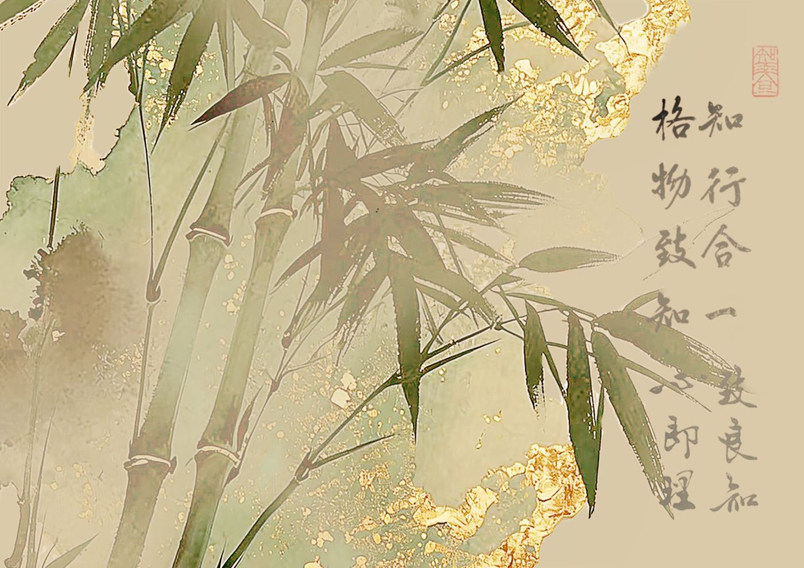
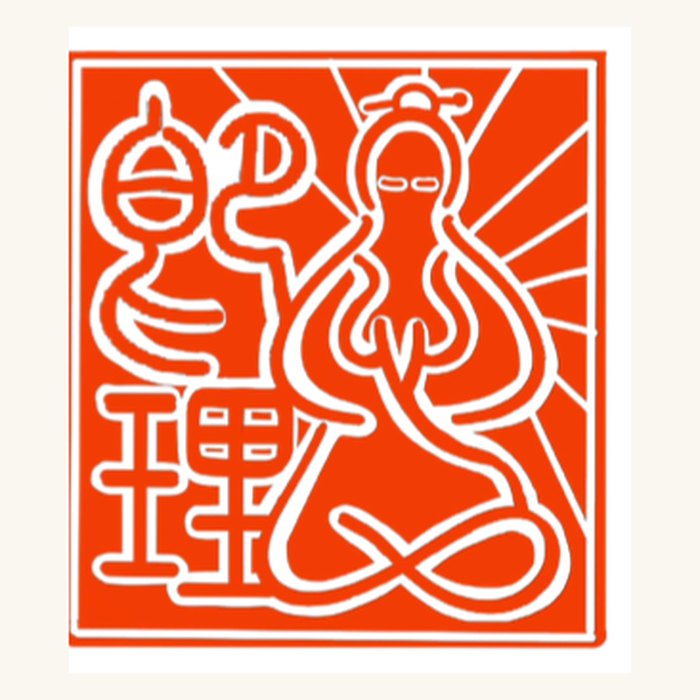
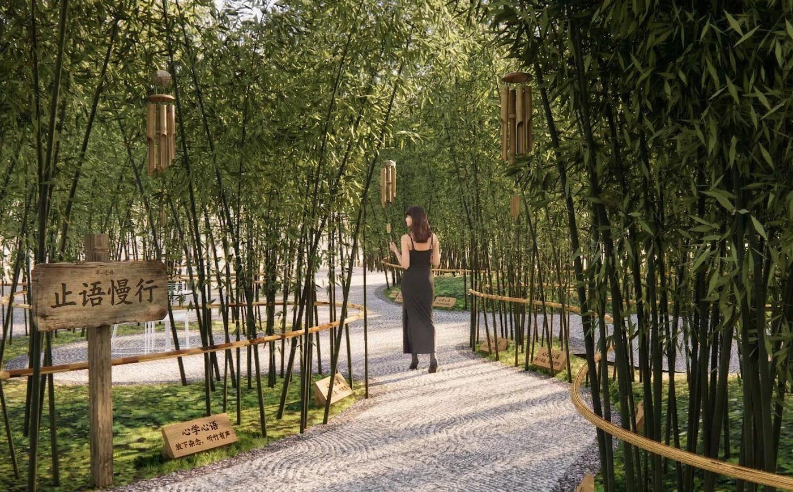

竹海十家 · 心学集章记
阳明文化与竹海融合的深度体验旅游产品设计运营方案




把王阳明在和平县真实推行过的「十家牌法」，从一段写在纸上的制度史，变成一条游客能走完、能盖章、能带走的竹林游线。
- 背景
- 翠山竹海是华南最大毛竹林，核心竹林覆盖 30 余平方公里、覆盖率 83.5%，年均游客仅约 10 万人次，停留不到半天。文化资源与生态资源都在，缺的是可体验的产品。
- 做法
- 以「一核 · 双轨 · 三融」为框架：一本十家牌手册作为入口，竹海空间与心学叙事双轨并行，制度融、空间融、文化融三层落地。十个节点散点植入既有的竹林地貌，不新建文化馆。
- 产出
- 151 页完整方案文本、10 枚心学印章视觉、多组场景效果图、投资与运营测算（工程建安 1.2 亿元；文化体验类五年收益约 980 万元）。
- 结果
- 第十五届「挑战杯」广东大学生创业计划竞赛 · 河源「百千万工程」专项赛 · 省级三等奖。
田野调研主题定位空间叙事印章视觉运营测算